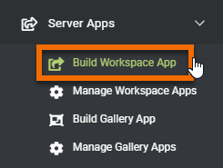
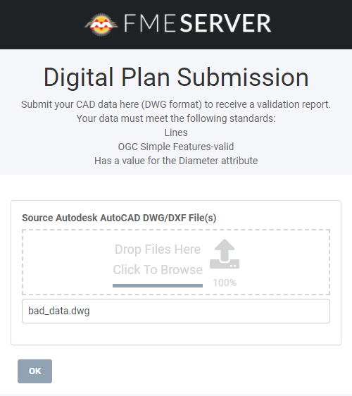

After completing this unit, you’ll be able to:
Now that her workspace has been published to FME Server, Jennifer can turn it into an FME Server App. Anyone with the URL can access an FME Server App, no login required. Therefore, she’ll be able to provide the link to CAD contractors to validate their data before it will be accepted by the City.
To create an FME Server App, she logs into FME Server and clicks Server Apps > Build Workspace App in the left-hand menu.

She fills in the dialog as follows.
|
Name |
digital-plan-submission |
|
Title (optional) |
Digital Plan Submission |
|
Description (optional) |
Submit your CAD data here (DWG format) to receive a validation report. Your data must meet the following standards: Lines OGC Simple Features-valid Has a value for the Diameter attribute |
|
Repository |
Self-Serve |
|
Workspace |
publish-your-validation-workflow.fmw |
|
Service |
Data Streaming |
|
Expiration |
Default (10 years) |
After filling in the form she clicks OK. Her app is now available at http://localhost/fmeserver/apps/digital-plan-submission. To confirm it works without an FME Server login, she opens a private browsing window (e.g. Incognito Mode in Chrome) and visits the URL. She is able to access it, upload bad_data.dwg, and run it, with the results streamed back to her in her browser.

Jennifer is ready to deploy her app in the city’s digital plan submission workflow. She adds a link to the City’s website where submitters can validate their data before submitting. The data quality of submitted plans should increase now that submitters can validate beforehand.
Make sure you have followed along with Jennifer’s steps.